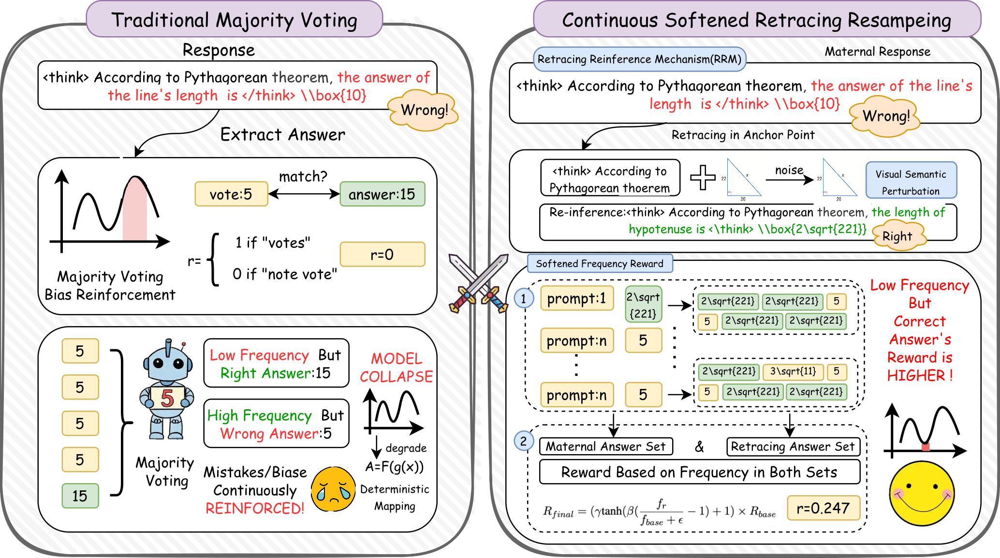
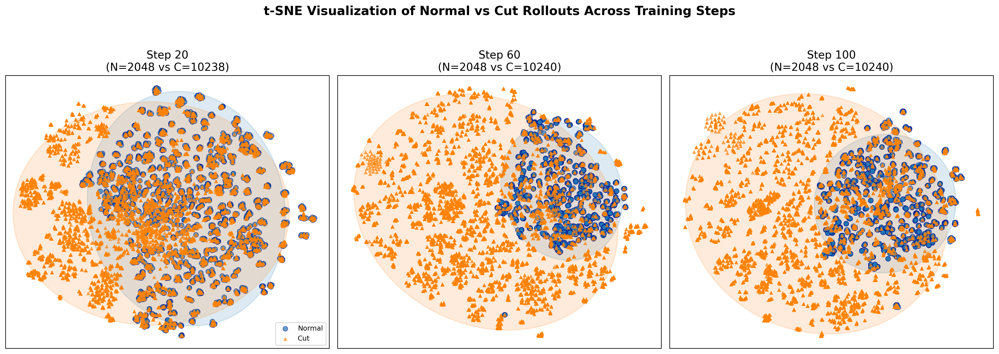

Abstract
In the unsupervised self-evolution of Multimodal Large Language Models (MLLMs), existing methods relying on majority voting often lead to model collapse—the model reinforces its own biases and loses logical diversity. To counteract this, we propose Continuous Softened Retracing reSampling (CSRS), a novel framework that stabilizes self-evolution via three synergistic components:
- Retracing Re-inference Mechanism (RRM): restarts reasoning from critical anchor points to explore long-tail logical paths.
- Softened Frequency Reward (SFR): replaces binary rewards with continuous signals calibrated by answer frequency, damping distributional polarization.
- Visual Semantic Perturbation (VSP): injects noise into images to force reliance on invariant mathematical logic rather than superficial visual cues.
Experiments on Qwen2.5-VL-7B across MathVision, MathVerse, MathVista, and WeMath show that CSRS consistently outperforms MM-UPT and other unsupervised baselines, achieving state-of-the-art results (e.g., 68.25% on MathVista) while mitigating model collapse.
Proposed Method
Key Theoretical Insight
Majority voting leads to exponential contrast factor \(G_{MV} = e^{\eta}\), while SFR yields \(G_{SF} = e^{\eta(\rho-\epsilon)} < G_{MV}\). This mathematically proves that softened rewards slow down distribution collapse, preserving exploratory diversity.
Algorithm 1: CSRS — For each input, sample n maternal trajectories, then re-infer from anchor points (rate ω) with m rollouts, compute softened frequency rewards, and optimize via GRPO.

🔄 Retracing Re‑inference
Truncate at anchor point (ω=0.7 optimal) and resample m=5 times. Expands coverage of rare correct paths without exhaustive global search.
⚖️ Softened Frequency Reward
\(R_{final} = (\gamma \tanh(\beta(\frac{f_r}{f_{base}}-1))+1)\times R_{base}\). Dynamically upweights low‑frequency but consistent answers.
🎨 Visual Perturbation
Gaussian noise on images prevents shortcut learning, forces reliance on geometric logic → more robust reasoning.
Experiments & Results
| Training Data | Method | MathVision | MathVerse | MathVista | WeMath | Avg. |
|---|---|---|---|---|---|---|
| — | Qwen2.5-VL-7B | 25.40 | 44.24 | 66.42 | 67.65 | 50.93 |
| Geometry3K | MM-UPT | 26.95 | 44.53 | 66.47 | 68.49 | 51.61 |
| Geometry3K | CSRS (Ours) | 27.97 | 46.01 | 67.81 | 71.77 | 53.39 |
| GeoQA | MM-UPT | 26.61 | 44.15 | 65.84 | 68.25 | 51.21 |
| GeoQA | CSRS (Ours) | 28.95 | 45.82 | 68.25 | 69.32 | 53.09 |
| MMR1 | MM-UPT | 25.98 | 45.12 | 66.27 | 69.14 | 51.63 |
| MMR1 | CSRS (Ours) | 27.86 | 45.89 | 67.81 | 70.53 | 53.05 |
| Module | MathVision | MathVista | WeMath |
|---|---|---|---|
| Majority Vote (Baseline) | 25.40 | 66.42 | 67.65 |
| + SFR | 26.52 | 67.15 | 69.42 |
| + RRM | 26.85 | 67.38 | 69.85 |
| + SFR+RRM | 27.68 | 67.62 | 71.30 |
| Full CSRS | 27.97 | 67.81 | 71.77 |

Key Findings
- Mitigating Model Collapse: CSRS slows entropy decay compared to majority voting, preserving exploration.
- Optimal Hyperparameters: Retracing rate ω=0.7, re-inference size m=5, γ=0.2, β=5.0 achieve best trade-off.
- Generalization: CSRS also boosts InternVL3-8B (+2.6% avg) and ThinkLite-VL-7B, showing architecture agnostic.
Citation
@misc{yu2026csrs,
title={Stabilizing Unsupervised Self-Evolution of MLLMs via Continuous Softened Retracing reSampling},
author={Yunyao Yu and Zhengxian Wu and Zhuohong Chen and Hangrui Xu and Zirui Liao and Xiangwen Deng and Zhifang Liu and Senyuan Shi and Haoqian Wang},
year={2026},
eprint={2603.21289},
archivePrefix={arXiv},
primaryClass={cs.CV},
url={https://arxiv.org/abs/2603.21289}
}